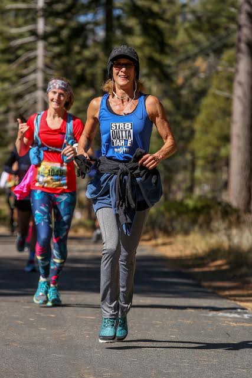
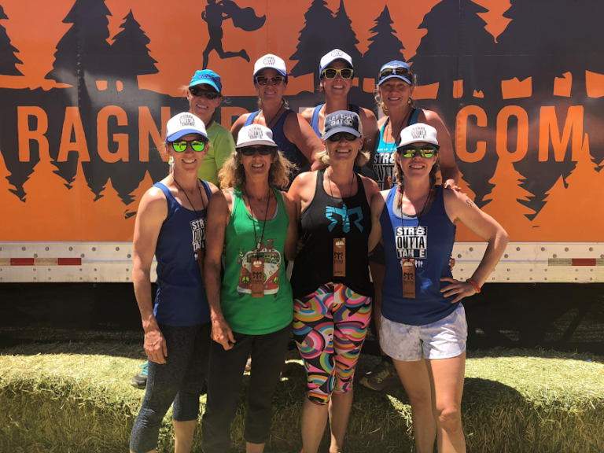
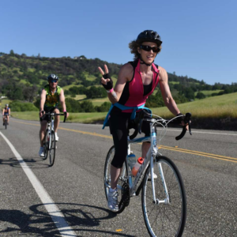
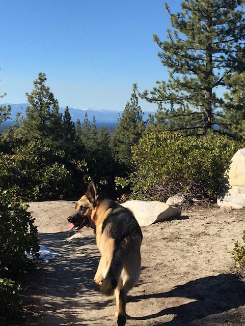

Member Spotlight: Paula Williams
By Harris Goldstein | November 26, 2020
 This edition of our Member Spotlight features Walk-A-Wish member Paula Williams! Paula is a Walk-A-Wish Champion and workout fanatic who recently completed a Ragnar Relay, a grueling long-distance relay race! Check it out!
“I’m from South Lake Tahoe, California. I’ve lived here 52 of my 56 years. I've been a Personal Trainer/Nutritionist/Running Coach, etc.… for about 36 years.”
Paula’s fitness journey began many years ago when she was a teenager growing up in the Lake Tahoe area. “Running has always been a form of therapy for me. I was kinda troubled as a teen, I started running and it changed my life. It was the beginning of a long career in the fitness field for me, and I'm still going strong.”
She recently completed a Ragnar Relay, one of several under her belt to date. “Ragnar Relays are international and they've achieved a kind of cult-like status among really crazy runners. They are two-day relays. A road relay consists of 12 team members using 2 vans and running three separate distances each as they travel from one place to another, usually around 200 miles. For instance, I did the SoCal Ragnar which left Huntington Beach and ended in San Diego. You run around the clock until your team has arrived at the final destination.”
There are two types of Ragnar Relays, Road Relays and Trail Relays, and Paula has completed several of both. “A Ragnar Trail Relay has you setting up camp at a specific destination, in the wilderness somewhere. Each team member again will complete three courses. Unlike the Road Relay, you always end up back at camp, or “The Village” at the end of each run.”
“Trail Relays are known to be very hard, especially if they're in a mountainous location such as Lake Tahoe. This last one was the hardest thing any of us have ever done. Over 4,000 feet of elevation, lots of snow, mud, rivers, MOSQUITOS, and super technical trails. My team killed it though. We came in third in Women's Masters, so that's fun!”
 In addition to participating in the relays, Paula takes on various leadership roles for each event, including serving as team captain. “Being the captain of a team full of INCREDIBLY brave and tough women is my favorite thing to do. I love putting together teams and organizing all the logistics for the events. Training and helping newer runners accomplish something so intense is super inspiring and fulfilling for me. Team events are indescribable! Everyone pulling together, supporting one another, encouraging, empathizing, and bonding as a team as we accomplish things we probably would never do on our own, is simply the best!”
Paula began using the app several years ago and hasn’t stopped since. “I've been using Walk-A-Wish for about four years. I was running with a friend and she told me about it. I've also used other apps, but I prefer the group interaction of Walk-A-Wish. And now that I only have to open my Strava app, it's so easy to pile up the miles with minimum effort. I like being able to choose my charity and support the things I care about. I love the support and encouragement of the CM community.”
In regard to charity, Paula typically supports the ASPCA. “I'm an obsessed animal lover, and I won't eat any animal products. I love them all and am a huge proponent and advocate for pet adoption. [My dog] Rambo was rescued from a high kill shelter almost 8 years ago. We've always adopted and it's a HUGE passion of mine to educate people on the benefits of saving a life from suffering and death.”
 A typical workout for Paula varies as she regularly switches between a number of activities. “I typically do two runs, two rides, and two weight workouts a week, along with other activities. My runs are usually up very steep climbs. Lots of cross country skiing in the winter.”
“Training for a Ragnar Trail Relay is always super intense, and besides, where I live I can't leave the house without encountering lots of mountainous “ups.” Bike rides are the same. If I want to go any decent distance, 20-40 or more miles, I will be climbing lots of hills and passes. Uphill is my favorite! Downhill, not so much.
“I also focus on upper body workouts with lots and lots of pushups and pull-ups, and various other bodyweight exercises. I can do more pushups and pull-ups than most men I know, and at 56 I'm always amazed at the ability to get even stronger. I do use some weights, but only for a few things. I’ve been working with weights since Arnold brought us bodybuilding back in the 70's.”
 Wondering what keeps Paula going after nearly 40 years of running? “Nothing feels better than a run. The things I'm blessed to see, the places I get to go, because of my running, are what keep me going. The views as I climb and the wildlife I get to encounter are something I will never tire of. Winter, spring, summer, or fall, every run is a gift and I'm so thankful that I am privileged to still be able to keep doing it as long as I have.
“I have no plans on stopping either. Through all life's highs and lows running (and all my other activities) has always been there for me. Without it, I'm not sure I would've survived!”
Paula, congratulations on your innumerable accomplishments to date! We at Walk-A-Wish wish you all the bet going forward! Keep up the great work and good luck in your future relays!